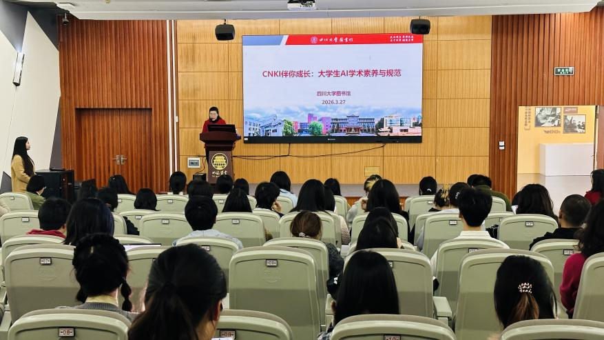

学院通知 · 科研创新
AI赋能科研新范式：四川大学图书馆携手权威出版机构共探学术创新
发布时间：2026-04-01 10:06:00
为精准赋能师生科研创新，涵养AI时代学术规范与诚信意识，近期四川大学图书馆相继举办两场AI学术工具专题讲座。活动聚焦CNKI AI与WOS AI两大核心工具，吸引了来自全校各学院的三百余名师生参与，现场座无虚席，反响热烈。 CNKI AI ：筑牢根基，素养先行 3月27日下午，“CNKI伴你成长：大学生AI学术素养与规范”讲座在江安图书馆明远讲坛开讲。杜小军副馆长出席并致辞，中国知网西南区高级培训师尹佳妮担任主讲。 尹老师系统展示了CNKI AI“问、查、读、创”全链条功能，重点讲解了如何利用高质量资源与可信增强技术实现高效检索与深度研读。讲座特别强调了AI时代的学术伦理，引导师生正确提问、批判性使用AI工具，严守学术诚信底线。 现场互动氛围热烈，来自公管、历史文化、数学、艺术等近30个学院的师生齐聚一堂。近20位同学就工具使用场景与技巧踊跃提问，实现了从“被动听”到“主动学”的转变。 WOS AI：智启未来，范式革新 3月31日下午，“WOS研究助手助力开启智能科研探索新范式”讲座在工学图书馆五楼明远影苑举行。工会主席韩夏主持活动，科睿唯安解决方案顾问危期担任主讲。 危期老师结合科研全流程，深入拆解了Web of Science研究助手在选题立项、文献综述、论文写作及投稿选刊等环节的实用价值。从挖掘选题思路到辅助外文润色，从梳理发展脉络到精准匹配期刊，AI工具为科研工作提供了全新路径。 在互动环节，来自华西临床、口腔、药学、物理、电子信息等学院的师生结合自身研究，就“工具推荐如何避免偏见”“模型如何保护数据隐私”以及“长文本处理规避幻觉”等前沿问题分享经验，探讨AI辅助科研的深度应用。 双轮驱动，智启新程 两场讲座以“工具赋能+素养培育”为核心，不仅为师生提供了高效科研的实用方法，更传递了AI时代的责任担当与学术规范。四川大学图书馆将持续深耕智慧化服务场景，推出更多贴合师生需求的学术培训与资源，为学校“双一流”建设注入强劲的知识服务动能。 撰文：杨海娟 图片：马梦灵 欢迎扫一扫加入CNKI AI、WOS AI学习交流群
